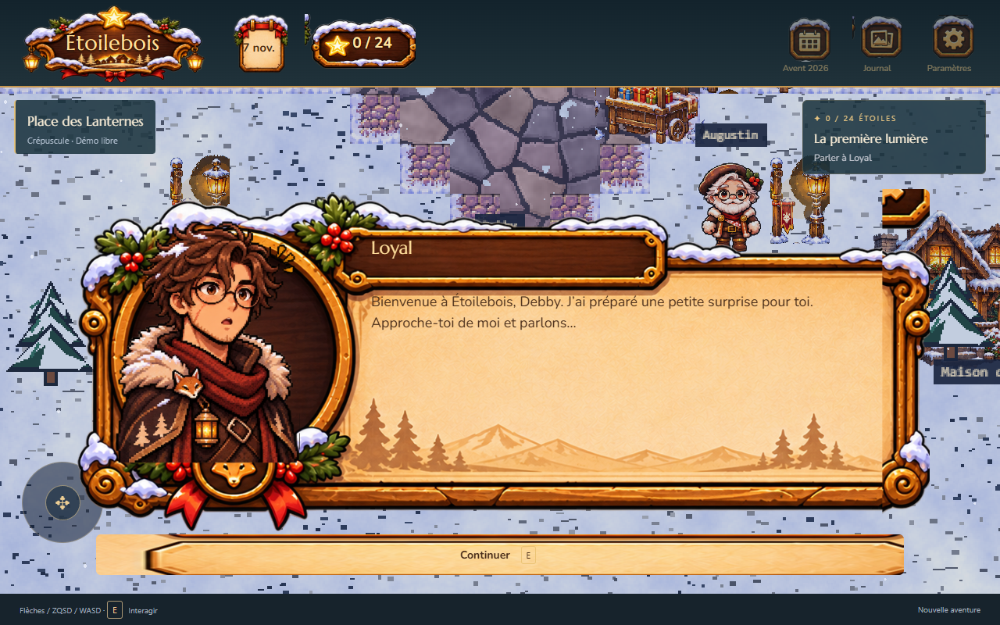
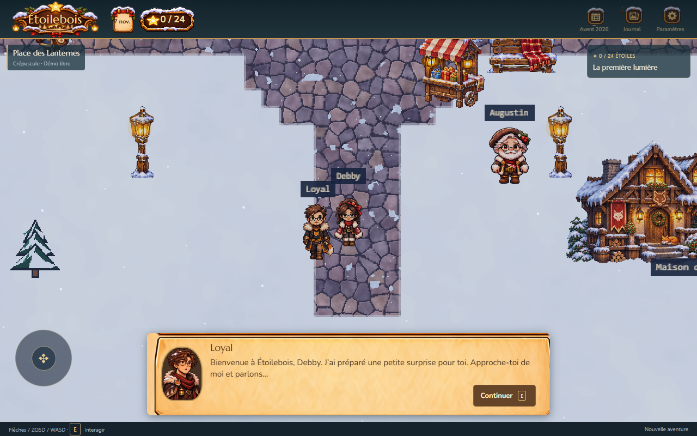
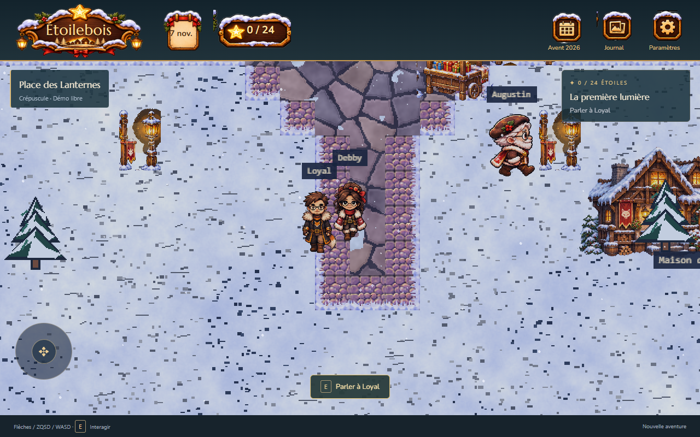
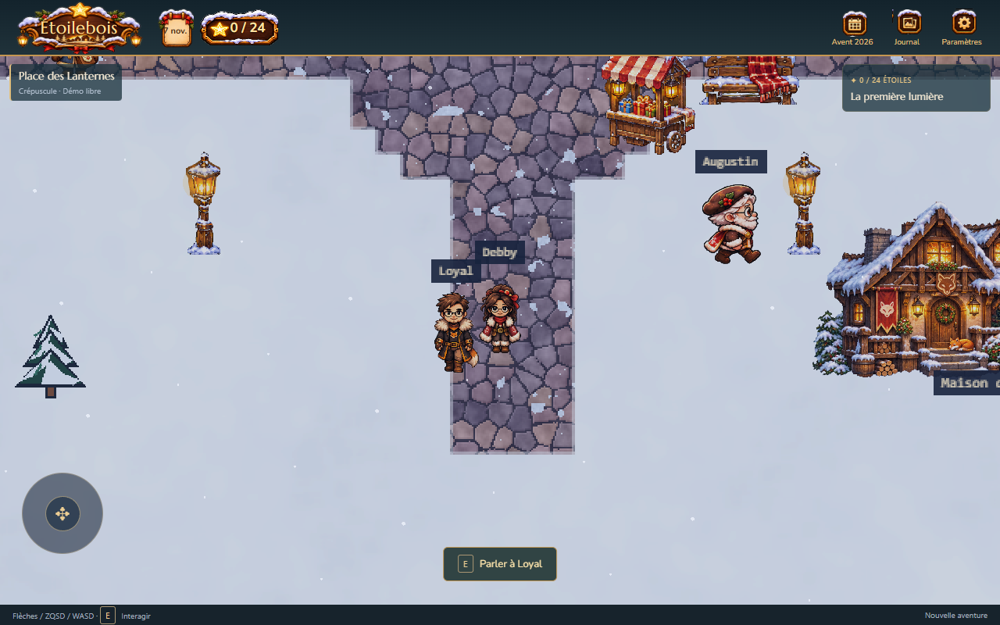
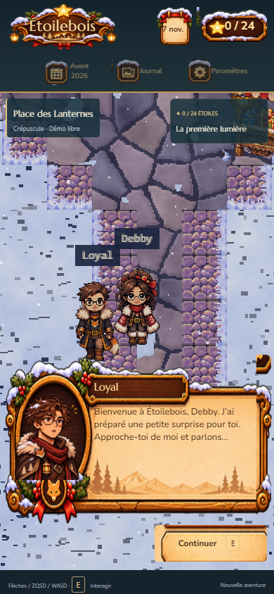
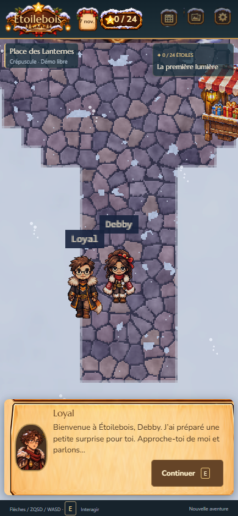

Étoilebois — correction graphique D.1
Comparaison des captures PC 1280 × 800 et mobile 390 × 844. Les captures « avant » proviennent de la version livrée c7dff61. Les captures « après » sont produites par les tests navigateur du projet corrigé. Cliquer sur une image pour ouvrir sa taille réelle.
PC — dialogue

Avant — cadre composite surdimensionné et fragment doré parasite.
Après — cadre compact issu de la bordure validée, portrait conservé.PC — village et neige

Avant — trous alpha dans le sol, textures grossières, fragments de planches.
Après — neige continue opaque, détails atténués et raccords extérieurs discrets.Mobile — dialogue

Avant — HUD haut et portrait occupant une grande partie de la fenêtre.
Après — HUD sur une ligne, portrait de 54 × 78 px, actions tactiles accessibles.Mobile — promenade
Contrôle des façades et de la profondeur

Cette grande vue sert au contrôle des contours et des couches. La caméra habituelle continue de suivre Debby. Aucun chemin, aucune collision et aucune sauvegarde n'ont été modifiés.
Bilan technique et limites · Contrôle téléphone 320 px